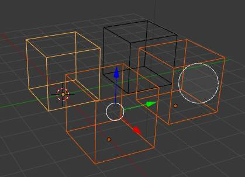
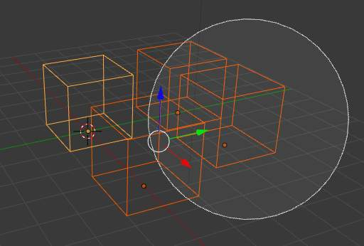

选择¶
Selection determines which elements will be the target of our actions. Blender has advanced selection methods. Both in 物体模式 and in 编辑模式.
Selections and the Active Object¶
Blender distinguishes between two different states of selection:
Unselected object in black, selected object in orange, and active object in yellow.
In 物体模式 the last (de)selected item is called the “Active Object” and is outlined in yellow (the others are orange). There is exactly one active object at any time (even when nothing is selected).
Many actions in Blender use the active object as a reference (for example linking operations). If you already have a selection and need to make a different object the active one, simply re-select it with
Shift-RMB.All other selected objects are just selected. You can select any number of objects.
Point Selection¶
The simplest form of object selection consists of using RMB on it.
To add to the selection, use Shift-RMB on more objects.
If the objects are overlapping in the view,
you can use Alt-RMB to cycle through possible choices.
If you want to add to a selection this way then the shortcut becomes
Shift-Alt-RMB.
To activate an object that is already selected, click Shift-RMB on it.
To deselect an active object,
click Shift-RMB one time - and hence two clicks if the object is not active.
Note that this only works if there are no other objects under the mouse.
其他wise it just adds those to the selection. There appears to be no workaround for this bug.
Rectangular or Border Select¶
参考
BWith Border Select you draw a rectangle while holding down LMB.
Any object that lies even partially within this rectangle becomes selected.
For deselecting objects,
use MMB or Border Select again with holding Shift.
To cancel the selection use RMB.
例子¶
{kind=link}
Border selecting in three steps.
Border Select has been activated in the first image and is indicated by showing a dotted cross-hair cursor.
In the second image, the selection region is being chosen by drawing a rectangle with the LMB.
The rectangle is only covering two cubes.
Finally, in the third image, the selection is completed by releasing LMB.
Notice in the third image, the bright color of left-most selected cube. This means it is the “active object”, the last selected object prior to using the Border Select tool.
Hint
Border Select adds to the previous selection, so in order to select only the contents of the rectangle,
deselect all with A first.
Lasso Select¶
参考
Ctrl-LMBLasso select is used by drawing a dotted line around the 轴心点 of the objects, in 物体模式.
{kind=link}
Circle Select¶
参考
CCircle Select is used by moving with dotted circle through objects with LMB.
You can select any object by touching of circle area.
It is possible to dynamically change the diameter of circle by scrolling MMB as
seen in pictures below. Deselection is under the same principle - MMB.
To cancel the selection use RMB or key Esc.

Circle selection. |

...with huge circle. |
{kind=link}
{kind=link}